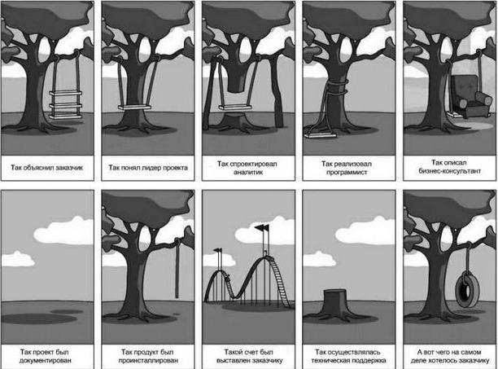
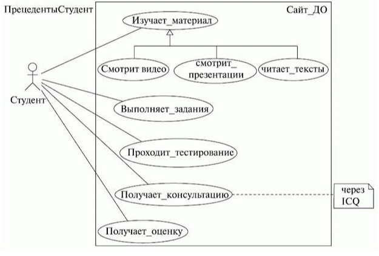
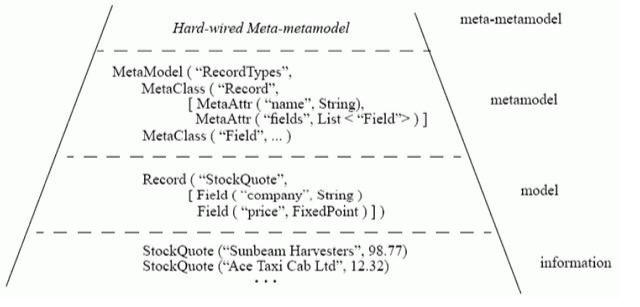

Лекция. Что такое The UML?
Способы использования языка
- Румбах присоединился к Бучу в Rational Inc. Они объединили свои нотации и создали первую версию UML.
- В 1995 году на конференции OOPSLA они представили его как Unified Method, который потом и получил название UML.
- Чуть позже к ним присоединился Якобсон, который добавил к результатам их труда элементы Objectory и начал работу над Rational Unified Process (RUP).
- В 1997 году UML был отправлен в Object Management Group (OMG) для стандартизации.
- Кроме трех нотаций "трех амиго" UML вобрал в себя элементы многих других методологий.
- Начать хотелось бы с демонстрации известной картинки, которая уже более двух десятилетий "живет" в Интернете,
но источник ее никому не известен (если кто-то из читателей сможет пролить свет на ее происхождение, автор будет очень благодарен за информацию).
- Эта картинка прекрасно иллюстрирует типичный процесс создания продукта, или "решения" (поскольку продукт решает проблему заказчика), как любят говорить в Microsoft.

- Здесь мы видим все проблемы программной инженерии, в частности проблемы с коммуникацией и пониманием, вызванные отсутствием четкой спецификации создаваемого продукта.
- Так вот, авторы UML определяют его как графический язык моделирования общего назначения (т. е. его можно применять для проектирования чего угодно - от простой качели, как на рисунке,
до сложного аппаратно-программного комплекса или даже космического корабля), предназначенный для спецификации, визуализации, проектирования и документирования всех артефактов, создаваемых в ходе разработки.
- Итак, UML в первую очередь - это спецификации. Заглянем снова в глоссарий и обнаружим, что спецификация - подробное описание системы, которое полностью определяет ее цель и функциональные возможности. Различают:
- словесные спецификации на естественном языке;
- модельные спецификации;
- формальные спецификации.
- Когда мы говорим о том, что UML - это средство визуализации, мы имеем в виду модельные спецификации.
- Все мы знаем, как иногда трудно заставить себя "вникнуть" в суть материала, излагаемого в очередном учебнике или мануале.
- Изучение чего-то нового идет гораздо проще, если документ содержит не только текст, а еще и иллюстрации к нему.
- А если руководство или учебник выглядят как картинки с подписями (вспомните майкрософтовские учебники и трейнер-киты или руководства пользователя мобильных телефонов!),
то усвоение нового материала происходит еще проще и эффективнее. Недаром до сих пор так популярны комиксы, которые также представляют собой картинки с текстом!
- Так вот, такие картинки с подписями наглядны и интуитивно понятны, причем почти однозначно понимаются любыми заинтересованными лицами,
так что могут использоваться в качестве средства общения между людьми. UML позволяет создавать такие простые и понятные картинки (модели),
описывающие систему с разных сторон, которые можно показать заказчику и обсудить с ним, т. е. служит средством коммуникации в команде.
- Посмотрите на рисунок ниже. Все ведь понятно, правда?

Структура определения языка
- Это, наверное, самая короткая часть лекции. Здесь нам хотелось бы рассказать о том, как описан UML его авторами.
- Но прежде нужно поговорить о способах описания искусственных языков вообще (например, языков программирования).
- Конечно, вы уже читали книги, в которых описывались языки программирования, и не могли не заметить, как авторы этих книг все время самоотверженно балансируют между точностью и понятностью описания.
- Велик соблазн описать язык формально точно, но такое описание своей сложностью может отпугнуть потенциального пользователя новой технологии.
- С другой стороны, "понятное", неформальное описание языка может получиться очень длинным и неполным и просто запутать читателя.
- Как же определен UML? Довольно часто компиляторы и IDE языков программирования написаны с использованием этих же языков (вспомните хотя бы Turbo Pascal!).
- Подобный метод применяется и при описании UML. Авторы использовали так называемое четырехуровневое метамоделирование.
- Первый уровень - это сами данные.
- Второй - это их модель, т. е., например, описание их в программе.
- Третий - метамодель, т. е. описание языка построения модели.
- Четвертый - мета-метамодель, т. е. описание языка, на котором описана метамодель.
- Для примера - следующий рисунок, позаимствованный из стандарта UML, показывает применение этого подхода к простым записям о котировках акций.

- UML, как уже говорилось выше, описывается подобным образом.
- Метамодель - описание самого языка, мета-метамодель - описание формализма, с помощью которого производится описание языка.
- Все это сопровождается комментариями на естественном языке и примерами моделей.
- Организованное таким образом описание UML распространяется OMG абсолютно свободно и "лежит" на сайте OMG, по адресу http://www.omg.org/.
- Этот грандиозный документ насчитывает около тысячи страниц, и неподготовленному читателю имеет смысл ознакомиться в нем лишь с первым и последним разделами (краткий обзор и словарь терминов).
- Зато, если человек уже знаком с UML, изучение метамодели языка - весьма интересное и полезное занятие.
Терминология и нотация
- Вопрос терминологии в программной инженерии, а тем более РУССКОЙ (не говоря уже об украинской) терминологии, - вопрос сложный.
- Дело в том, что оригинальная терминология UML не всегда последовательна и довольно запутана.
- Русская же терминология еще не успела сложиться, ведь UML как технология проектирования сама по себе очень молода, да и русскоязычная литература по нему стала появляться, как всегда, с некоторым опозданием.
- Некоторые авторы пытаются каждый термин передать "осмысленными", "хорошими русскими словами", что не всегда удается.
- С точки зрения автора, искать русские аналоги уже привычных английских терминов - занятие ненужное и даже вредное: вспомните, как трудно было вам найти нужную команду в меню русского MS Office, если вы привыкли пользоваться английским (в таких случаях родной язык сильно замедляет работу).
- Поэтому, наверное, проще использовать транскрипцию и не изобретать велосипед! В конце концов, хорошие английские слова (даже записанные русскими буквами) так же хороши, как и хорошие русские!
- Теперь давайте поговорим о нотации. "Нотация" - это то, что в других языках называют "синтаксисом".
- Само слово "нотация" подчеркивает, что UML - язык графический и модели (а точнее диаграммы) не "записывают", а рисуют. Как уже говорилось выше, одна из задач UML - служить средством коммуникации внутри команды и при общении с заказчиком.
- "В рабочем порядке" диаграммы часто рисуют на бумаге от руки, причем обычно - не слишком аккуратно. Поэтому при выборе элементов нотации основным принципом был отбор значков, которые хорошо смотрелись бы и были бы правильно интерпретированы в любом случае - будь они нарисованы карандашом на салфетке или созданы на компьютере и распечатаны на лазерном принтере.
- В UML используется четыре вида элементов нотации:
- фигуры
- линии
- значки
- надписи
- Разберем все по порядку. Фигуры используются "плоские" - прямоугольники, эллипсы, ромбы и т. д.
- Но есть одно исключение - как мы увидим далее, на диаграмме развертывания для обозначения узлов инфраструктуры применяется "трехмерное" изображение параллелепипеда.
- Это единственное исключение из правил. Внутри любой фигуры могут помещаться другие элементы нотации.
- О линиях стоит сказать лишь то, что своими концами они должны соединяться с фигурами.
- На UML диаграммах вы не встретите линий, нарисованных "сами по себе" и не соединяющих фигуры. Применяется два типа линий - сплошная и пунктирная.
- Линии могут пересекаться, и хотя таких случаев следует по возможности избегать, в этом нет ничего страшного.
- Вообще же стоит сказать, что UML предоставляет исключительную свободу - можно рисовать что угодно и как вздумается, лишь бы можно было понять смысл созданных диаграмм.
- В изображении фигур и значков тоже нет каких-то жестких требований, и разработчики CASEсредств для UML-проектирования вовсю используют эту свободу, применяя различные стили рисования, заливку фигур цветом, тени и т. д.
- Иногда это смотрится весьма симпатично, а иногда даже раздражает.
- Кстати об инструментах рисования. Мы уже упоминали, что такое ПО существует, и далее мы рассмотрим этот вопрос более подробно (проведя сравнительные исследования), пока же скажем лишь о нескольких наиболее заметных программах этого класса.
- К таким пакетам можно отнести:
- IBM Rational Rose;
- Borland Together;
- Gentleware Poseidon;
- Microsoft Visio;
- Telelogic TAU G2.
- Наиболее известными из этой пятерки являются Rational Rose и Together. Это действительно средства для проектирования, а не рисования, как Visio.
- UML-модель состоит из совокупности диаграмм. UML-диаграммы бывают различных видов, о многих из которых мы поговорим в следующей лекции.
Выводы
- UML - еще один формальный язык, который необходимо освоить каждому, кто собирается заниматься программной инженерией.
- Само собой разумеется, что знание UML не гарантирует построения разумных и понятных моделей, хотя и является для этого необходимым.
- UML предоставляет огромную свободу при рисовании диаграмм и выборе инструмента рисования. Производители инструментов также воспользовались этой свободой, чтобы по своему разумению "украсить" имеющуюся нотацию.